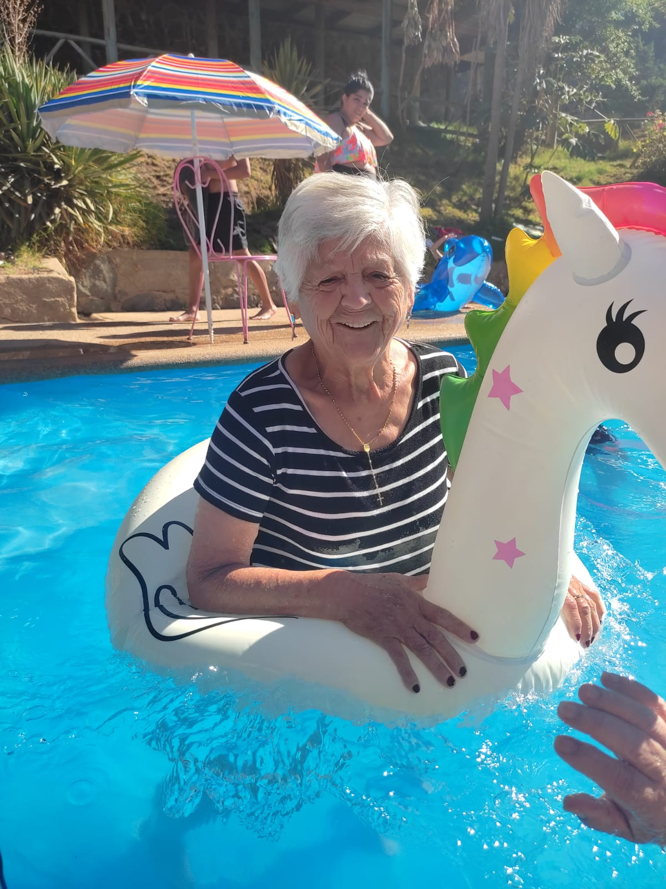

En memoria de
[1945 — 2025]
"una frase que la representaba, o algo que solía decir"
Escribe aquí un párrafo breve: quién fue, qué la hacía especial, un recuerdo o una costumbre suya. Dos o tres frases bastan.
Escribe aquí la historia de su vida: de dónde era, cómo era su familia, a qué se dedicó, los momentos que la marcaron y lo que la hacía quien era. Puede ser tan largo como quieras — este es el espacio para contarla de verdad, más allá de la biografía breve de arriba.
Un texto de cierre — puede ser un mensaje de despedida, algo que la familia quiera decirle, o cómo la seguimos recordando.
Una frase o recuerdo corto que alguien de la familia quiera dejarle.
Otra frase o recuerdo.
Otra frase o recuerdo.
Otra frase o recuerdo.
Otra frase o recuerdo.